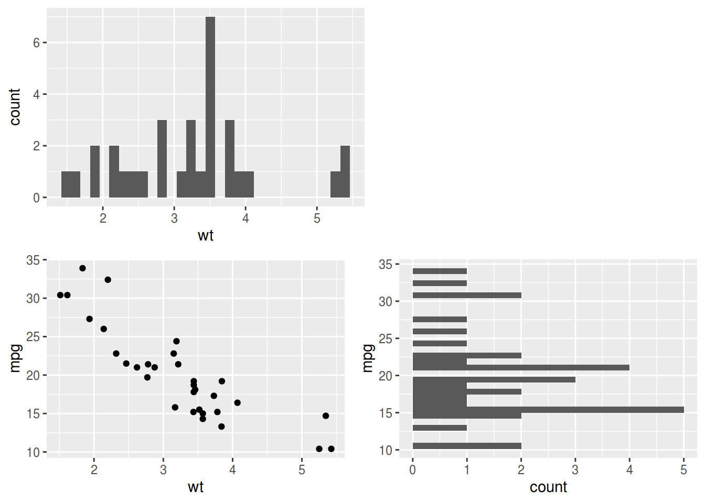
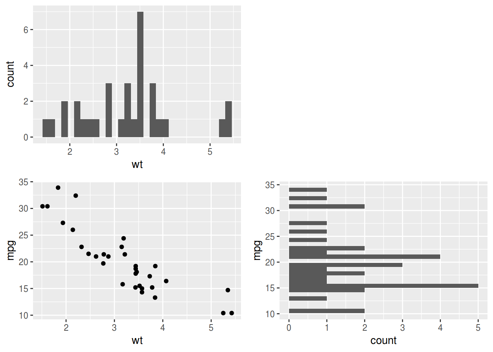
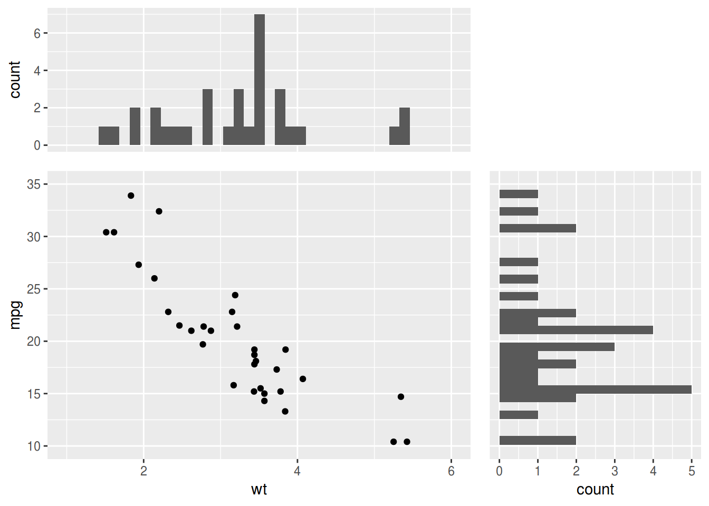

patchwork packages is a great tool to assemble ggplot2 object.
I made a Japanese slide to introduce patchwork package in Tokyo R meeting.
Here, I tried to produce marginal plots, but failed because I was using plot arithmetics (| and /).
library(ggplot2)
library(patchwork)
xy <- ggplot(mtcars, aes(wt, mpg)) + geom_point()
x <- ggplot(mtcars, aes(wt)) + geom_histogram(bins = 30)
y <- ggplot(mtcars, aes(mpg)) + geom_histogram(bins = 30) + coord_flip()
(x | plot_spacer()) / (xy | y)
I just found that wrap_plots() helps.
wrap_plots(x, plot_spacer(), xy, y, nrow = 2)
However, plots need to share xlim and ylim using coord_cartesian() and coord_flip().
xlim(), ylim(), are not good choice because they may change binwidths of histograms.
wrap_plots(
x + coord_cartesian(xlim = c(1, 6)),
plot_spacer(),
xy + coord_cartesian(xlim = c(1, 6), ylim = c(10, 35)),
y + coord_flip(xlim = c(10, 35)),
nrow = 2
)
Adjusting theme() and wrap_plots(widths =, heights =) will make much more beautiful marginal plots.
theme_marginal_x <- theme(axis.title.x = element_blank(), axis.text.x = element_blank(), axis.ticks.x = element_blank())
theme_marginal_y <- theme(axis.title.y = element_blank(), axis.text.y = element_blank(), axis.ticks.y = element_blank())
wrap_plots(
x + coord_cartesian(xlim = c(1, 6)) + theme_marginal_x,
plot_spacer(),
xy + coord_cartesian(xlim = c(1, 6), ylim = c(10, 35)),
y + coord_flip(xlim = c(10, 35)) + theme_marginal_y,
nrow = 2,
widths = c(1, 0.5),
heights = c(0.5, 1)
)